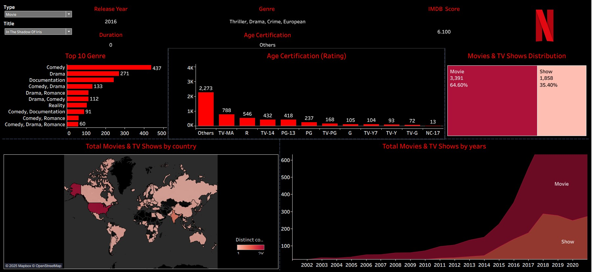

Original Visualization
Understanding the original dashboard, its data, and its intended analytical tasks.

About the visualization
The original visualization is a Tableau dashboard exploring Netflix movies and television shows. It combines several views to describe the catalog across time, genre, age certification, content type, and production country.
The dashboard is primarily designed for users who want an overview of Netflix's content catalog and its distribution across different categories. The multiple views allow users to explore both individual titles and broader catalog-level patterns.
Visualization Critique
Strengths and weaknesses of the original design.
Original Visualization and Context
The original dashboard brings together several complementary views of Netflix content. The user can inspect title-level information while also seeing distributions by genre, age certification, content type, geography, and year. This makes the dashboard useful as a general exploratory overview rather than as a visualization focused on a single analytical question.
Strengths
The dashboard combines temporal, categorical, and geographic views. These different encodings allow users to explore several aspects of the dataset without relying on a single visualization.
The dashboard provides a useful overview of Netflix's catalog. Users can move from title-level information to larger patterns in genre, content type, certification, and geography.
Weaknesses
The original dashboard contains many heterogeneous views, but does not establish a strong primary analytical task. As a result, users may not immediately know which comparison should receive the most attention.
The stacked area chart shows the number of movies and television shows over time. However, only the bottom category has a common baseline. Comparing the upper series across years therefore requires estimating differences between changing boundaries.
Many titles contain multiple genres such as "Comedy, Drama, Romance." Treating these combinations as individual categories makes it difficult to determine the prevalence of individual genres. The redesign separates multi-label genres before counting them.
The original treemap provides a compact overview of content type, but comparing areas is less precise than comparing aligned positions or lengths. The redesign therefore emphasizes line and bar charts for quantitative comparisons.
Redesign
An interactive D3.js redesign focused on Netflix content evolution.
The redesign focuses the visualization around a clearer question: How has Netflix's content catalog changed over time? The main temporal comparison uses separate lines for movies and television shows, while supporting views reveal genre, certification, and country patterns.
NETFLIX CONTENT EVOLUTION
How has the catalog changed over time?
Content released over time
Number of titles by release year
Most common genres
Multi-label genres counted individually
Age certification
Distribution of content ratings
Production countries
Countries with the most titles
Redesign Decisions
The redesign places the time-series comparison first because temporal change provides a more coherent organizing question for the dashboard.
Movies and TV shows are represented by separate lines so that both categories share the same baseline and can be compared directly across years.
Genre strings are split into individual categories. A title such as "Comedy, Drama" therefore contributes once to Comedy and once to Drama.
The content-type and year controls update all views simultaneously, allowing users to investigate a specific subset without losing the overall structure.
Original vs. Redesign
How the redesign changes the analytical experience.
Improvements and Trade-offs
The redesign makes quantitative comparisons easier by using common baselines and aligned positions. It also gives the dashboard a clearer visual hierarchy and provides coordinated interaction across views. However, the redesign sacrifices some of the breadth of the original dashboard. The geographic map, title-level metadata, and some of the original exploratory details are not retained as primary views. The result is therefore more focused, but less comprehensive as a general-purpose catalog browser.
References
Data and visualization sources.
- Prathu10. Netflix EDA Dashboard. GitHub. Repository
- Netflix titles dataset used by the original project, including title, type, release year, genre, certification, country, and IMDb-related metadata.
- D3.js. Data-Driven Documents .